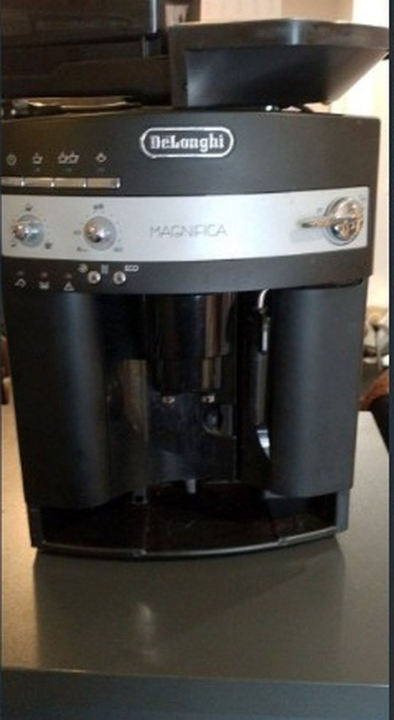

Opravit, nebo vyměnit kávovar? Praktický průvodce pro Prahu
Slabý průtok, unikající voda nebo zaseknutá spařovací jednotka nemusí automaticky znamenat konec přístroje. Ne každá oprava se ale vyplatí. Rozhodnutí je rozumné opřít o typ závady, stav kávovaru, dostupnost dílů a předem vysvětlené náklady.

1. Kdy může mít servis smysl?
U kávovarů bývají opravitelné například některé závady těsnění, hadiček, výpustí, čerpadla nebo spařovací jednotky. Výsledek však záleží na konkrétním modelu, rozsahu poškození a dostupnosti vhodného náhradního dílu. Stejné chybové hlášení může mít více příčin; bez kontroly přístroje nelze slíbit přesnou opravu ani její cenu.
Pokud kávovar fungoval spolehlivě a závada je izolovaná, může být oprava přiměřeným řešením. U staršího přístroje s několika současnými poruchami je vhodné srovnat očekávané celkové náklady s cenou a možnostmi nového zařízení. Důležité je i to, zda si lze opatřit díly pro daný model.
2. Co lze bezpečně zkontrolovat doma
- Identifikace modelu: vyhledejte označení na výrobním štítku a poznamenejte přesný text chyby.
- Nádržka na vodu a odkapávací miska: ověřte jejich správné usazení podle návodu.
- Čištění: spusťte pouze běžný uživatelský program doporučený výrobcem; čištění kávových olejů a odvápnění nejsou totéž.
- Vyjímatelné části: manipulujte jen s díly, které má podle výrobce uživatel sám vyjímat a čistit.
3. Pět otázek, které položit před schválením opravy
- Jaká závada byla zjištěna a co je teprve potřeba ověřit?
- Jaké jsou celkové předpokládané náklady včetně práce, dílů, případné dopravy a diagnostiky?
- Je náhradní díl dostupný a odpovídá přesně modelu kávovaru?
- Co se stane, pokud další kontrola odhalí další závadu?
- Jaké podmínky platí pro opravu, předání přístroje a případnou záruku?
Údaj „diagnostika zdarma“ může mít na různých místech různé podmínky. Vždy si předem ověřte, zda se případný poplatek platí při odmítnutí opravy a jak se počítá do konečné ceny. Tato poradna neslibuje konkrétní cenu, dobu opravy ani rozsah záruky.
4. Kdy zvažovat nový přístroj
Výměna může dávat smysl, pokud by celkové náklady opravy byly vysoké vůči hodnotě přístroje, opakovaně se objevují různé poruchy, nelze sehnat důležité díly nebo je zařízení výrazně poškozené. Nejde však o univerzální pravidlo; kvalitně udržovaný starší přístroj může dál dobře sloužit.
Při srovnání zvažte také spotřebu energie, kapacitu, dostupnost servisu a cenu běžné údržby. Rozhodnutí by se nemělo řídit jen cenou samotného náhradního dílu.
5. Co ukazují skutečné servisní případy
Elektro Specialist s.r.o. zveřejňuje vlastní fotodokumentaci oprav v Praze. U zdokumentovaného kávovaru DeLonghi Magnifica byla nahlášena zaseknutá spařovací jednotka; u dalších zařízení jsou zachyceny různé příznaky. Z fotografií nelze automaticky odvozovat všechny provedené úkony ani náklady.
- DeLonghi Magnifica: zdokumentovaná závada spařovací jednotky
- Kávovary Krups: fotodokumentace různých závad
- Co připravit před nahlášením závady kávovaru
Servis kávovarů v Praze — Elektro Specialist s.r.o.
Elektro Specialist s.r.o. se věnuje servisu kávovarů a další techniky v Praze. Pro poptávku si připravte značku, přesný model, popis problému a případné chybové hlášení. Rozsah případného zásahu je vždy nutné posoudit podle konkrétního zařízení.
Kontakt: Vratislavova 21/26, 128 00 Praha 2. Telefon: +420 770 644 383. Více o servisu kávovarů.
Text připravila společnost Elektro Specialist s.r.o. jako obecný informační materiál, nikoli jako nezávislé hodnocení nebo individuální diagnostický závěr. Datum publikace: 25. 11. 2026.